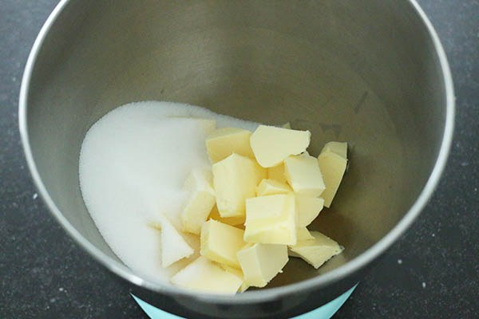
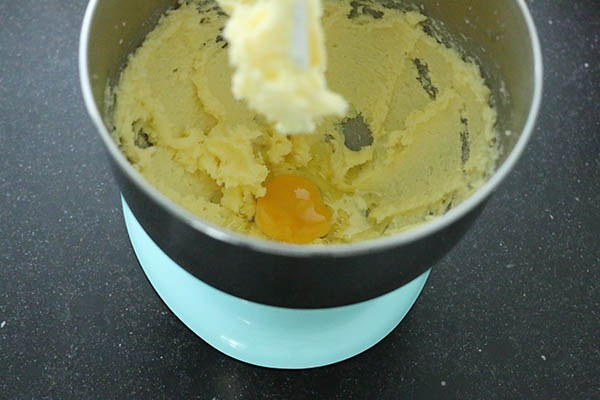
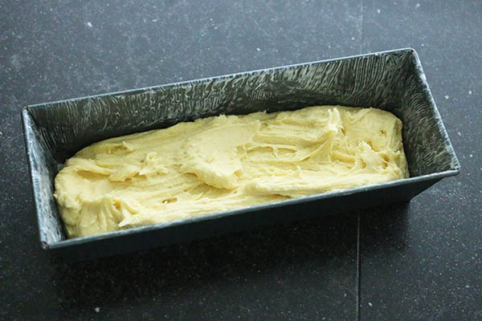

Ingrediënten:
- 240 gr suiker
- 240 gr boter of margarine (+ om in te vetten)
- 280 gr zelfrijzend bakmeel
- 1 zakje vanille suiker
- Snuf zout
- 4 grote eieren
Benodigdheden
- mixer
- Cakevorm van ca. 30 cm
- Bakpapier
- Zeef
Bereiding
- Verwarm de oven op 175 graden. Vet een bakvorm goed in en leg eventueel
een velletje bakpapier op de bodem, hierdoor gaat hij er makkelijker uit.
Mix de suiker met de vanillesuiker en boter romig. Mix een voor een de eieren er door.
Zeef het zelfrijzend bakmeel met een snufje zout er bij. Spatel of mix nog een keer goed door.
- Doe het cakebeslag in de bakvorm. Zet de cakevorm ca. 60 minuten in de oven tot hij mooi gerezen en gaar is.
Controleer met een prikker of de cake er droog en schoon uit komt.
- Tips: Zorg dat alle ingrediënten voor de cake op dezelfde temperatuur
zijn en voeg ze beetje bij beetje toe om schiften te voorkomen.


